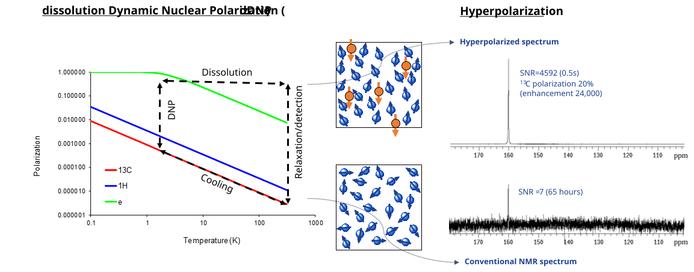
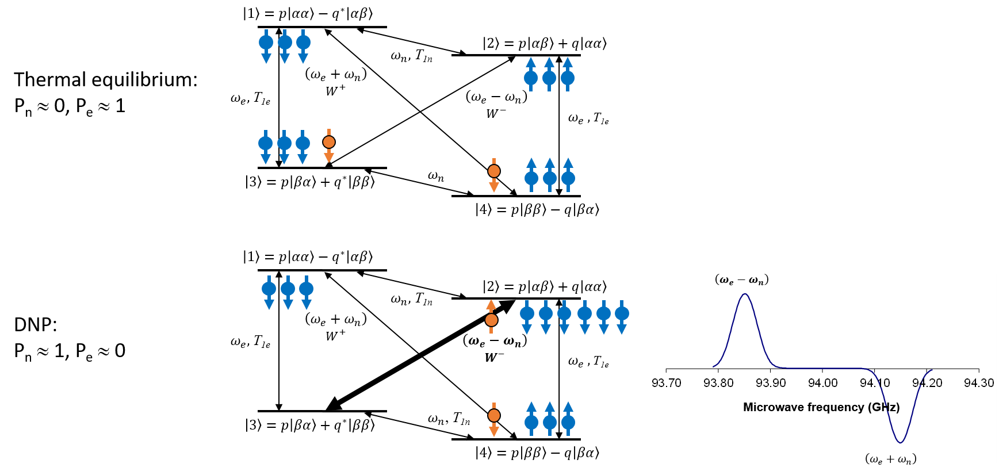
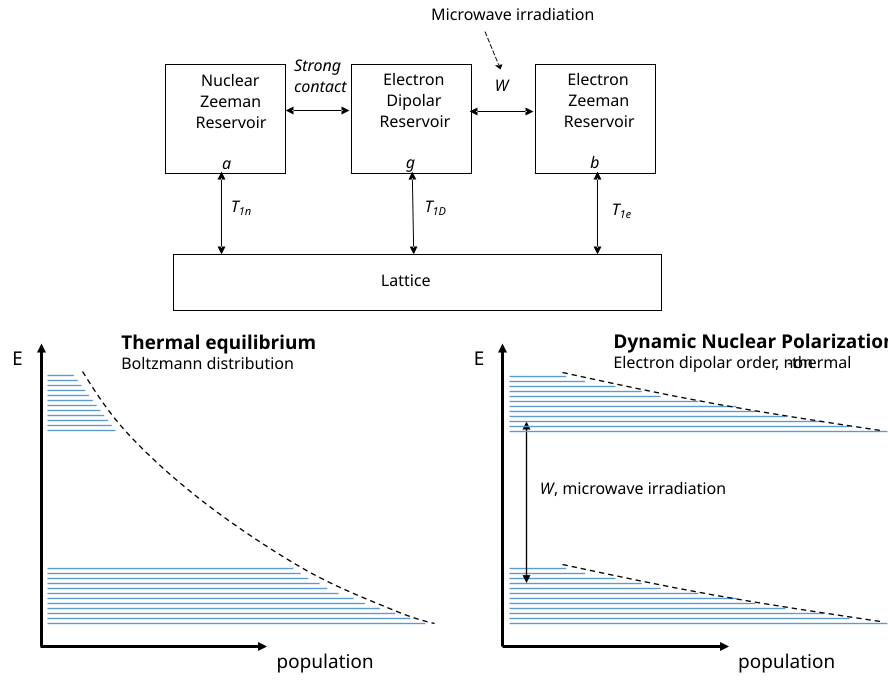
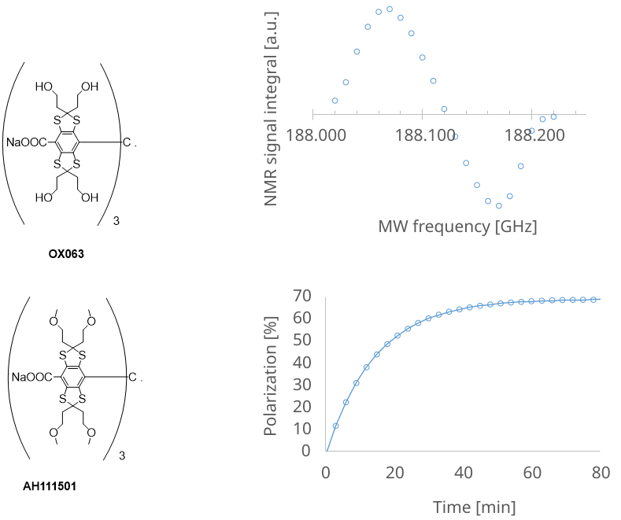

The Physics of dissolution Dynamic Nuclear Polarization¶
Jan Ardenkjaer-Larsen, PhD
Department of Health Technology, Technical University of Denmark, Denmark
Abstract: The physics of dissolution Dynamic Nuclear Polarization, a method to hyperpolarize nuclear spins in molecules in solution, is described. The method is based on polarizing nuclear spins in the solid state at low temperature by Dynamic Nuclear Polarization. Dynamic Nuclear Polarization was predicted and demonstrated in the mid-fifties. Electron paramagnetic agents in the solid sample provide a strong spin polarization that is transferred to nuclear spins by irradiation with microwaves. Under optimal magnetic field and temperature conditions, and for many samples, the nuclear spins can be almost completely polarized. Dissolving the cold, solid sample expediently, preserves the nuclear spin polarization in the phase transition to the liquid state at room temperature. This makes dissolution Dynamic Nuclear Polarization applicable in biological and medical studies by the preparation of solutions of hyperpolarized metabolic contrast agents.
Key Words: Hyperpolarization, magnetization, sensitivity, dynamic nuclear polarization, electron paramagnetic agents, electron spin resonance, nuclear magnetic resonance.
Introduction¶
Hyperpolarization can be based on several principles, of which, three have successfully been applied to molecules in solution: ParaHydrogen Induced Polarization (PHIP), brute force polarization, and dissolution Dynamic Nuclear Polarization (dDNP), while optical pumping can effectively polarize noble gasses. The dDNP method has been particularly successful in making solutions of biologically interesting molecules with highly polarized nuclear spins. The method takes advantage of Dynamic Nuclear Polarization (DNP) in the solid state followed by rapid dissolution in a suitable solvent. The dissolution step retains, almost completely, the nuclear spin polarization, thus creating a solution with a non-equilibrium nuclear polarization, Fig. 1. It took a decade of research and development to translate the idea first published [1] in 2003 into a first-in-man study [2] in 2013. Since then, several research groups have used dDNP in clinical research, and have published a number of papers [3–11]. The dDNP method has continued to expand rapidly with publications of studies on the basic physics of DNP and hyperpolarized spin states, instrumentation, acquisition hardware and pulse sequences, and biomedical applications.

Figure 1: The polarization of the electron and nuclear spins follow Boltzmann statistics and is only a few parts per million (ppm) at room temperature (the graph is plotted for 3.4 T, a typical polarizer magnetic field strength, and close to a clinical MR scanner field strength). Microwave irradiation close to the resonance frequency of the electron spin enhances the nuclear spin polarization in the solid state. After a certain time, the nuclear spin polarization reaches a steady-state, and the sample can be rapidly dissolved to produce a liquid solution of hyperpolarized nuclear spins. A strongly enhanced nuclear signal can be acquired. The shown ^13^C spectrum [1] is from hyperpolarized urea with a polarization of 20%, 24,000 times stronger than the thermal polarization at 9.4 T and room temperature.
Polarization, magnetization, sensitivity, and hyperpolarization¶
The polarization, for a spin I=½, is given by the difference in populations of the two energy eigenstates
\(P = \frac{N^{+} - N^{-}}{N^{+} + N^{-}}\) Eq. 1
where \(N^{+}\) and \(N^{-}\) denote the number of spins parallel (spin up) and anti-parallel (spin down) to the external magnetic field, B~0~, respectively. As a point of caution, it is often stated that spins are either pointing up or down (i.e., they are in one of the two eigenstates). However, this is not correct. Quoting Slichter [12]: “We emphasize that an arbitrary orientation can be specified, since sometimes the belief is erroneously held that spins may only be found pointing either parallel or antiparallel to the quantizing field. One of the beauties of quantum theory is that it contains features of both discreteness and continuity. In terms of the two quantum states with m=±½ we can describe an expectation value of the magnetization which goes all the way from parallel to antiparallel, including all values in between. …”. The individual spin is therefore in a superposition of the two eigenstates and may be pointing in any direction. However, the statistical distribution of the ensemble is such that a certain polarization exists. However, it is, as said, perfectly valid to speak of populations (probabilities) of the eigenstates.
The polarization at thermal equilibrium, P~0~, follows Boltzmann statistics with the spin temperature equal to the lattice temperature, T~S~=T~L~,
\(\frac{N_{+}}{N_{-}} = e^{- \frac{\hslash\gamma B_{0}}{k_{B}T_{S}}}\) Eq. 2
\(P_{0} = tanh\left( \frac{\hslash\gamma B_{0}}{2k_{B}T_{S}} \right) \cong \frac{\hslash\gamma B_{0}}{2k_{B}T_{S}} = \frac{hf_{0}}{2k_{B}T_{L}}\) Eq. 3
Where \(f_{0} = \gamma B_{0}\) is the Larmor frequency and γ is the gyromagnetic ratio of the spin I, \(\hslash\) is Planck’s constant and k~B~ is Boltzmann’s constant. Eq. 3 is linear for low polarization, P<0.5, and the high temperature approximation can be used. This will be valid at thermal equilibrium for any realistic magnetic field and temperature condition. According to Eq. 3 a temperature, T~S~, can be assigned to the spins for any polarization. For example, P=0, complete saturation, corresponds to an infinite spin temperature. Depending on the sign of the polarization, the spin temperature can be either positive or negative. It will approach zero (cooling) as the polarization approaches unity. From Eq. 3 we calculate the proton polarization in a 3 T MR scanner to be \(10^{- 5}\), while the polarization for ^13^C is only \(2.6 \bullet 10^{- 6}\), or four times lower, Table 1, Fig. 1. A theoretical enhancement of the nuclear spin polarization of 100,000 and 400,000 times, respectively, is therefore possible, if almost full polarization could be achieved.
Table 1: Thermal polarization for ^13^C at selected magnetic field and temperature conditions.
+—————-+—————-+—————-+—————–+ | Magnetic field | Frequency | Temperature | Thermal | | | | | polarization | | B~0~ [T] | f~0~ [Hz] | T [K] | | | | | | P~0~ [ppm] | +================+================+================+=================+ | 1.0 | 11.0·10^6^ | 301 (28 °C) | 0.878 | +—————-+—————-+—————-+—————–+ | 3.0 | 32·10^6^ | 293 (20 °C) | 2.62 | +—————-+—————-+—————-+—————–+ | 9.4 | 100·10^6^ | 298 (25 °C) | 8.05 | +—————-+—————-+—————-+—————–+ | 6.7 | 71.8·10^6^ | 1.4 | 1,230 | +—————-+—————-+—————-+—————–+ | k~B~ | | | | | =1.381⋅10^-23^ | | | | | J/K, | | | | | *h= | | | | | *\(2\pi\hslash\) | | | | | =6.626⋅10^-34^ | | | | | Js, γ~13C~=2π | | | | | 10.7084 MHz/T | | | | +—————-+—————-+—————-+—————–+
The sensitivity of the NMR experiment is determined by several factors. D. Hoult (1) gives an excellent treatment of the problem, based on the principle of reciprocity. The signal-to-noise ratio (SNR) ‘master equation’ is
\(\text{SNR} = \frac{0.707}{\text{NF}}2\pi f_{0}B_{1\text{xy}}M_{0}V_{S}\sqrt{\frac{T_{2}}{4k_{B}\text{TR}}}\) Eq. 4
where B~1xy~ is the radiofrequency magnetic field created at unit current by the coil (perpendicular to B~0~), M~0~ the sample magnetization, V~s~ the sample volume, T~2~ is the time constant of the signal decay, R the equivalent noise resistor, and T the temperature of the noise resistor. A receiver noise factor NF is included. This equation gives the SNR of an NMR spectrum defined as peak height divided by root-mean-square (rms) noise. A single acquisition of flip angle 90° is assumed. An optimal (from SNR point of view) weight function (exponential with time constant T~2~) is applied. The field at unit current, B~1xy~, is averaged (or assumed uniform) across the sample. The magnetization relates to polarization as
Where N is the number of spins per unit volume (concentration).
The various parameters of Eq. 3 can now be discussed:
The receiver (preamplifier, mixer, etc) is usually contributing less than 10% (NF ≈1 dB) additional noise. For cryoprobes the preamplifier noise becomes a challenge, and the preamplifier must be cooled as well.
The resistance R represents the sum (root-mean-square) of two noise sources: the electronic noise of the coil and the noise (fluctuating ionic currents in the tissue) generated by the object. The frequency (field) dependence of these two contributions differs: electronic noise would approx. increase linearly with frequency, whereas sample noise increases approx. with the square of the frequency. It is a good assumption that the coil losses will be the dominant noise contribution in most circumstances of NMR spectroscopy. Only for the larger probes, very conductive samples or at the highest frequencies, will the noise originate from the sample. In MRI, the cross-over between electronic and sample noise happens at a lower frequency due to the larger size of the object. However, it is always desirable to reduce electronic noise to a point where sample noise dominates. In that case, the noise resistor becomes approx. proportional to f~0~^2^. This is a regime where hyperpolarized sample SNR becomes field independent, since the magnetization (polarization) is given. If electronic noise dominates, it will be advantageous to go to higher field strength. Cryoprobes improve the SNR by reducing the noise resistor (improved Q-factor) and temperature (e.g. ~20 K) of the NMR coil. Since the coil must be insulated efficiently from the room temperature sample, some sensitivity is lost due to increased size of the coil (lower filling factor). Effectively a sensitivity improvement of a factor four is specified for commercially available cryoprobes.
The magnetic field created at unit current by the coil is determined from the geometry of the NMR coil. Two typical geometries in NMR spectroscopy are the saddle coil (generates a magnetic field perpendicular to the axis of a superconducting solenoid magnet) and the solenoid coil (oriented orthogonal to the static magnetic field). In MRI circularly polarized geometries are typically used such as the birdcage that provide a \(\sqrt{2}\) gain in SNR. Otherwise, surface coils can be used for local detector or as elements in phased arrays.
The sensitivity increases as γ^11/4^ for spins at thermal equilibrium and as γ^7/4^ for hyperpolarized spins (same polarization) when electronic noise is dominating. It means that ^1^H is 45 times more sensitive than ^13^C and 540 times more sensitive than ^15^N. Furthermore, the natural abundance of the spins will further reduce the sensitivity of ^13^C and ^15^N by a factor 90 and 270, respectively. When the sample noise is dominating the sensitivity scales as γ^2^ for spins at thermal equilibrium and as γ for hyperpolarized spins. This means that ^1^H is 4 times more sensitive than ^13^C and 10 times more sensitive than ^15^N for the same polarization.
For mass limit applications the coil should be as small as possible. This has driven the development of microcoils (1-10 uL sample size) and has currently a sensitivity superior to cryoprobes (>60 uL) for the same mass of analyte. Microcoils therefore primarily find its use in applications where limited sample amounts are available (drug metabolism etc.). The highest possible concentration is aimed for. In this regime the SNR is inversely proportional to \(\sqrt{V_{S}}\). As it can be seen from Table 1-2 the sensitivity of the micro-coil is 60 times better than a 5 mm probe for a fixed number of spins. This is due to the reduced volume (200 times) and more optimal coil geometry. The square root volume dependency is only correct for a scaling of the same coil geometry. For concentration limited applications, the situation is the opposite. The SNR improves as \(\sqrt{V_{S}}\). As large a sample as possible should be used since the number of spins (mass) will increase by \(V_{S}\). This can also be seen from the Table 1-2 since the concentration detection limit is lowest for the 10 mm probe.
The transverse relaxation time, T~2~, and the homogeneity of the magnet determine the signal decay. The dephasing due to inhomogeneity can be refocused as done by many imaging sequences, but the field dependence of T~2~ may be a consideration when deciding for the optimal magnetic field strength. Likewise, this is the case for T~1~, and factors affecting T~1~ are discussed later in the chapter.
Spectral dispersion is a further argument for higher magnetic fields strength.
Methods of hyperpolarization¶
Optical pumping of the noble gases ^3^He and ^129^Xe is a technique that was originally developed in atomic physics laboratories [13]. Noble gases are polarized by the method that won Alfred Kastler the Nobel Prize in 1966. The method relies on the transfer of angular momentum from photons to electrons by absorption of circularly polarized light in a first step. Two methods have been developed: the spin exchange method, discovered at Princeton in 1960, and meta-stability exchange optical pumping. In the spin exchange method, the unpaired spin of the valence electron of an alkali atom (e.g. Rb vapor) is polarized via the strong resonance line at 795 nm connecting the ^2^S~1/2~ ground state of the alkali metal to the ^2^P~1/2~ excited state. The polarized alkali metal electron spins then transfer their polarization through magnetic hyperfine coupling to the nuclear spins of a noble gas, which is present at densities up to several bars. Due to the weakness of hyperfine coupling, this kind of spin exchange is a rare process occurring with a probability of order 10^-4^ for xenon and 10^-7^ for helium during a gas kinetic encounter of the partner atoms. As a result, it takes from minutes for ^129^Xe up to several hours for ^3^He to attain steady-state nuclear polarization.
The meta-stability spin exchange process applies exclusively to ^3^He. Meta-stable ^3^He atoms are produced in the ^3^S~1~ state at a relative population of 10^-6^ in a low-pressure plasma of about 1 mbar. The electron spin of these meta-stable atoms is then polarized by circularly polarized light at 1083 nm to the ^3^P~0~ state. Exchange between a meta-stable atom and a ground state atom leaves the former in the atomic ground state with a polarized nucleus. The next atom is then ready for pumping, thus forming a fast, catalytic chain of successive energy transfers and pumping action. Within a few seconds the ^3^He plasma attains a nuclear polarization of more than 50%. Meta-stability spin-exchange is much more efficient than alkali metal spin exchange.
Since the mid 1990’s, hyperpolarized noble gases have been applied to MR imaging of the lungs [14], as well as in the dissolved state [15]. The optical pumping method is, however, practically limited to the noble gas isotopes bearing a nuclear spin of ½, i.e. ^3^He and ^129^Xe, in order to achieve long enough relaxation times. Noble gases with higher spin have short T~1~ due to their quadrupolar moment. Since ^3^He is rare and expensive (produced in radioactive decay of tritium), most effort has focused on optimizing polarization and producing ^129^Xe, which is naturally occurring (26%) in the atmosphere. Attempts to transfer the ^129^Xe nuclear polarization to other nuclei have been attempted with limited success [16].
In the late 1980s Bowers and Weitekamp [17,18] discovered, both theoretically and experimentally, that the hydrogenation of small organic molecules with parahydrogen led to a highly ordered spin state, which was manifest as very large MR signals for the corresponding protons as the symmetry of the two protons as broken, ParaHydrogen-Induced Polarization (PHIP). This phenomenon arises from the quantum statistical mechanical properties of dihydrogen. Of the four possible spin isomers of dihydrogen, the singlet state of the nuclear spins, called parahydrogen, has the lowest energy. At room temperature there is an even distribution of the four spin isomers, giving 25% of the para form. When the temperature is lowered the fraction of parahydrogen increases and approaches unity at ~20 K. If a molecule of parahydrogen can react with another molecule, it will in some cases retain the spin correlation between the two protons. However, the symmetry of the hydrogen molecule will be broken due to magnetic inequivalence and couplings with other spins, and the spin order of the parahydrogen can be transferred to the other spin by various methods [19]. For imaging applications, complete hydrogenation at high concentrations in aqueous systems must be achieved. Several substrates have been demonstrated for angiographic and perfusion studies, but there has been limited success with biologically relevant molecules so far. However, recent work has shown that hydrogenation is not a necessary requirement [20]. With certain catalysts, the spin order is transferred in a transient binding without chemical reaction. Another recent approach has been the use of special “side-arm” moieties that can be cleaved off subsequently [21]. Finally, it should be mentioned that the instrumentation for PHIP is quite simple and inexpensive.
Brute force polarization, i.e., the exposure of the sample to extremely low temperature in a high magnetic field, is not easily combined with liquid state MR applications. This is primarily due to the extremely low temperatures and high magnetic fields that are required. The ultra-low temperature of milliKelvin can be achieved by closed cycle dilution refrigerators, but the polarization build-up times under brute-force conditions tend to be unacceptably long, days to weeks. Even though the use of so-called relaxation switches has been proposed [22], the brute force method has not been made practical yet. Demonstrations of the brute method has only achieved less than a percent nuclear spin polarization [23–25].
The fourth hyperpolarization method, dDNP, is based on polarization transfer from unpaired electron spins (e.g., an organic free radical) that are added to the sample (e.g. a biological molecule enriched in ^13^C in specific chemical positions). The electron spin has a higher magnetic moment and is fully polarized under less challenging conditions such as temperatures close to a Kelvin and magnetic field strengths of some Tesla. In the solid state, microwave irradiation close to the resonance frequency of the electron spin, transfer, in part, the high electron spin polarization to the nuclear spins. The efficiency of this process depends on several parameters characterizing the various spin systems, but also on technical factors such as magnetic field strength, temperature and microwave frequency and power. The DNP theory will only be described at a high level to allow the reader to understand the significance of the properties of the electron paramagnetic agent (EPA) and sample formulation for the efficiency of DNP.
Dynamic Nuclear Polarization¶
DNP was first described theoretically by Overhauser in 1953 [26] and a few months later was demonstrated by Carver and Slichter [27] in metallic lithium. Overhauser predicted that saturating the conduction electrons of a metal would lead to an enhancement of the polarization of the nuclear spins. This was a fundamental discovery causing disbelief at the time: that heating of one spin system could lead to the cooling of another. Abragam soon extended the prediction by Overhauser for metals to electron spins in solution [28], and most magnetic resonance scientists are today familiar with the nuclear and electron spin Overhauser effect. Molecular dynamics average the electron-nuclear spin interactions and couple two-spin transitions to the lattice. Saturation of the electron spin transition (equalizing the populations of the electron spin eigenstates) causes a redistribution of the population of the nuclear spin states. The mechanism is most prominent in the liquid state but has also been reported in the solid state [29,30].
Overhauser DNP in liquids with radicals has been investigated by several groups [31]. The Zeeman energy of unpaired electrons is at least 658 times larger than that of the nuclei, and the same for their spin polarizations at high temperatures. At low to moderate magnetic fields, dipolar interaction between the electron and nuclear spins lead to enhancements of the nuclear polarization up to the ratio of their respective gyromagnetic factors γ~e~/γ~n~, which is 658 for ^1^H and 2,700 for ^13^C. However, the efficiency of the mechanism decreases with increasing field strength. At typical NMR field strengths used today (>9.4T), Overhauser DNP enhancements are much reduced as is the sample size due to the high resonance frequency of the electron spins. Overhauser DNP at moderate magnetic field strength and subsequent shuttling of the sample into a higher field for NMR detection has also been proposed. In any case, Overhauser DNP yields moderate gains in polarization compared to thermal equilibrium at room temperature. Furthermore, combination of dipolar and scalar interactions, as well as three-spin interactions, yield a combination of positive and negative DNP enhancements. These effects cause severely distorted relative intensities in NMR spectra, which render this method unsuitable as a robust and universal enhancement tool for liquid state NMR. Likewise, the polarization that can be achieved is not competitive to dDNP.
Soon after, Jeffries described the Solid Effect for spins in the solid state coupled by dipolar interactions [32]. Later, DNP in the solid state was extended mechanistically to processes involving several electron spins [33]. The irradiation of electron-nuclear (two-spin) or electron-electron-nuclear (three-spin) to induce a spin transition enhances the nuclear spin polarization above polarization at thermal equilibrium. The initial theoretical framework for DNP had limited success in quantitatively predicting the efficiency of DNP. Over the last few years, the theory has been extensively revisited, and new theoretical frameworks have been developed. Three mechanisms are generally described:
The solid effect (electron-nuclear two spin interaction with the microwave magnetic field).
The cross effect (electron-electron-nuclear three-spin interaction with the microwave magnetic field, inhomogeneous Electron Paramagnetic Resonance (EPR)).
Thermal mixing (electron-electron-nuclear three-spin effect, homogeneous EPR).
The grouping into these three mechanisms is primarily due to historical reliance on analytical models (primarily spin temperature theory) that make certain assumptions to derive expressions for the DNP effect. In this work, a spin temperature picture will be used to describe the main features of DNP. In more recent work, quantum mechanical treatments [34–38] have been developed that enable the handling of large spin systems in the solid state. It remains yet to be seen how these new approaches (enabled by increased computational abilities) agree with spin temperature models for realistic samples and experimental data. For the quantum mechanical treatments, the three mechanisms are naturally incorporated without distinction and will describe intermediate cases between (2) and (3) as well as both two and three-spin transitions. The classical spin temperature models of DNP are known to fail in describing DNP quantitatively. However, these can be solved analytically with some assumptions. The spin temperature picture has been refined in recent years to consider properties of the electron spin system and thereby comes in closer agreement with experimental observations. However, these models must be solved numerically, and it is questionable if the models provide further physical insight into DNP than full quantum mechanical treatments. For a recent comprehensive description of DNP based on spin temperature concepts see [39–41].
Solid Effect¶
The solid effect is most easily understood of the three mechanisms [33,39]. A dilute EPA with spin S=1/2 and Larmor frequency ω~e~ in a diamagnetic material with nuclear spins I=1/2 with Larmor frequency ω~n~ are coupled by dipolar interactions. The dipolar interaction permits simultaneous flips of spins S and I (Fig. 2). In such spin reversals the total energy of the spin system changes by an amount ħ(ω~e±~ω~n~) provided by the microwave field. This interaction is also a relaxation mechanism with the missing energy provided by the lattice in the form of one or several phonons. The rates (transition probability) of these processes are typically very small at low temperatures (typically 10^-3^ s^-1^ or less) due to the short electron spin T~2e~ and the relatively weak microwave field that can be applied. On the other hand, the relaxation (transition probability) of the electron spin alone, caused by its coupling to the lattice, occurs at a much faster rate, T~1e~^-1^ (typically 1 s^-1^ to 10^3^ s^-1^).

Figure 2: The solid effect is a two-spin process involving the electron spin and the nearby nuclear spins. The two spins are coupled by the dipolar interaction (kHz) and irradiating with microwaves at the sum or difference frequencies of the Larmor frequencies of the two spins, causes either a positive or negative (inversion) enhancement of the nuclear polarization. The two-spin transitions have very low transition probability, benefit from a narrow linewidth electron spin resonance, and require a strong microwave field. The mechanism is therefore not very efficient in general. The electron spin relaxes efficiently to the ground state, whereas the nuclear spins have long relaxation times constants and remain in their new state. A ^1^H DNP spectrum is shown for bis-1,1-(hydroxymethyl)-[1-^13^C]cyclopropane-d~8~ (HP001) with trityl radical (OX063) at 3.4 T (142 MHz ^1^H and 94 GHz electron spin resonance frequencies).
Consider first an isolated electron-nucleus pair, with an electron spin
S and a nuclear spin I. In the absence of any mutual interaction,
the eigenstates of this two-spin system are equal to the simple product
states \(\left| \text{αα} \right\rangle\),
\(\left| \text{αβ} \right\rangle\),\(\left| \text{βα} \right\rangle\), and
\(\left| \text{ββ} \right\rangle\). We now consider that the spins are
coupled by a dipolar interaction
\(H_{\text{dip}} = \frac{\mu_{0}}{4\pi}\frac{\gamma_{1}\gamma_{2}\hslash^{2}}{r^{3}}\left( \widehat{\mathbf{I}} \cdot \widehat{\mathbf{S}} - \frac{3}{r^{2}}\left( \widehat{\mathbf{I}} \cdot \widehat{\mathbf{r}} \right)\ \left( \widehat{\mathbf{S}} \cdot \widehat{\mathbf{r}} \right) \right)\).
The dipolar interaction perturbs the pure product states and the
resulting spin eigenstates will contain an admixture of states. For
instance, one of the dipolar terms, \(S_{z}I_{+}\), mixes into the
original state \(\left| \text{αβ} \right\rangle\) a contribution from the
state \(\left| \text{αα} \right\rangle\). The mixing coefficients p and
q in Fig. 2 can be calculated by perturbation theory, and it is found
that
\(q = \frac{3}{2}\frac{\mu_{0}}{4\pi}\frac{\gamma_{S}\hslash}{B_{0}r^{3}}\sin\theta\cos\theta\exp\left( \text{iφ} \right)\),
\(|q| < < 1\). Because of the normalization (\(|p|^{2} + |q|^{2} = 1\)) we
have \(p \approx 1\). The transition probabilities between the states
\(\left| 1 \right\rangle \leftrightarrow \left| 4 \right\rangle\)
(flip-flop) and
\(\left| 2 \right\rangle \leftrightarrow \left| 3 \right\rangle\)
(flip-flip) are a factor \(4|q|^{2}\) smaller than the transition
probabilities between
\(\left| 1 \right\rangle \leftrightarrow \left| 3 \right\rangle\) and
\(\left| 2 \right\rangle \leftrightarrow \left| 4 \right\rangle\). The
coefficient q is proportional to the inverse distance cubed, the i.e.
it is most effective for nuclei in the near vicinity of the electron
spin. The electron spin transitions can be induced by spin-phonon
coupling [33]. In addition to the spin-lattice induced transitions,
there can also be transitions induced by the microwave field. The
frequency of the microwave field, corresponding to the difference in
energy between the states, 
\(W^{\pm} = 2|q|^{2}\pi\gamma_{e}^{2}B_{1}^{2}g\left( \Delta \pm \omega_{n} \right)\) Eq. 5
where \(g(\omega)\) is the normalized (by area) EPR. If the EPR is so broad that both transitions are induced simultaneously, the solid effect is said to be ‘unresolved’. If we consider the case of a resolved solid effect and assume that we drive the flip-flop transition, we obtain the following rate equations for the electron and nuclear spin polarizations:
\(\frac{dP_{e}}{\text{dt}} = - C_{n}W^{+}\left( P_{e} - P_{n} \right) - \frac{1}{T_{1e}}\left( P_{e} - P_{e}^{0} \right)\) Eq. 6
\(\ \frac{dP_{n}}{\text{dt}} = - W^{+}\left( P_{n} - P_{e} \right) - \frac{1}{T_{1n}}\left( P_{n} - P_{n}^{0} \right)\) Eq. 7
Here \(C_{n} = \frac{N_{n}}{N_{e}}\) is the number of nuclei that each electron has to ‘service’, \(P_{n}^{0}\) and \(P_{e}^{0}\) are the thermal equilibrium polarizations of the nuclear and electron spins, and finally \(T_{1n}\) and \(T_{1e}\) are the nuclear and electron spin relaxation time constants, respectively. If we assume that the electron spin Zeeman relaxation rate constant dominates both cross-relaxation rates as well as the nuclear Zeeman relaxation rate, we can neglect the first term in Eq. 5. The steady state electron spin polarization will then be equal to \(P_{e}^{0}\), and \(P_{e}\) can be replaced by \(P_{e}^{0}\) in Eq. 6. The solution to the resulting equation, \(\frac{dP_{n}}{\text{dt}} = - W^{+}\left( P_{n} - P_{e}^{0} \right) - T_{1n}^{- 1}\left( P_{n} - P_{n}^{0} \right)\), is an exponential increase to the asymptotic limit \(P_{n}^{0}\frac{\left( \frac{\gamma_{e}}{\gamma_{n}}W^{+} + T_{1n}^{- 1} \right)}{\left( W^{+} + T_{1n}^{- 1} \right)}\) with a rate constant of \(W^{+} + T_{1n}^{- 1}\). The build-up rate constant is thus always larger than the decay rate constant of the polarization. The maximum enhancement, \(\frac{\gamma_{e}}{\gamma_{n}}\), is obtained when the nuclear relaxation rate is negligible compared to the transition probability of the microwave driven transition. Furthermore, if other relaxation mechanisms than the coupling with the electrons exist for the nuclear spins, the enhancement is obviously further decreased, constituting a so called ‘leakage’. Another cause of reduced polarization enhancement occurs when the electron spin relaxation rate is no longer fast compared to the cross-relaxation terms. This is due to an inefficient coupling to the phonon lattice and is usually referred to as a ‘phonon bottle-neck’. Each electron spin must ‘service’ a large number, N~n~/N~e~, of nuclear spins to be effective. The electron spin must return to the ground state before any of the N~n~/N~e~ nuclear spins in its sphere of influence has flipped through a nuclear relaxation mechanism. This is true if the nuclear relaxation of the spins I has no other origin than their couplings with the spins S. If, however, other nuclear relaxation mechanisms, sometimes called leakage relaxation, are present, the condition may be violated, and the nuclear polarization would be smaller than P~e~. This is expressed by the equation N~n~/N~e~<<T~1n~/T~1e~. Fig. 2 shows a typical DNP enhancement spectrum for ^1^H (approx. 142 MHz) at 3.4 T (approx. 94 GHz for the microwave irradiation). The positive and negative enhancement of the nuclear spin polarization happens and the difference and sum frequencies, respectively.
Because of the 
Cross Effect and Thermal Mixing¶
The cross-effect or thermal mixing arises in the situation that the electron line width ∆ω~s~ is larger than the nuclear frequency, ω~I~, and involves two interacting electron spins and a nucleus. This situation arises when the electron spin g-tensor anisotropy is sufficiently large. The solid effect may still contribute, but it will in this case be unresolved and is harder to drive. Thermal mixing is historically described using spin temperature formalism. When the EPR line is irradiated at a frequency ω=ω~e~+∆, ħω~e~ is absorbed by the electron Zeeman reservoir and the remaining ħ∆ is absorbed or emitted by the nuclear Zeeman reservoir. The electron spin-spin dipolar reservoir is thereby cooled to a low spin temperature (positive or negative depending on microwave frequency). The electron spin-spin dipolar reservoir is coupled to the nuclear Zeeman reservoir, and these two spin baths should eventually reach a common spin temperature, Fig. 3. For ∆<0 the electron spin-spin dipolar reservoir emits energy and is cooled by the irradiation of the EPR, and the nuclear spin polarization (nuclear Zeeman reservoir) is enhanced by the strong coupling to the electron spin-spin bath. For ∆>0 the electron-electron dipolar bath absorbs energy and will cool the nuclear Zeeman reservoir to a low negative spin temperature. This situation also forms the basis of the equal spin temperature theorem; that all nuclear spin systems (e.g. ^13^C, ^15^N or ^2^H) eventually reaches the same spin temperature.
At low temperature (liquid Helium temperatures) the electron spin relaxation time, T~1e~, becomes very long (1 s^-1^ to 10^3^ s^-1^) and spectral diffusion within the EPR effectively renders the EPR homogeneous. In this case it becomes meaningful to describe the spin-spin interaction by a temperature. The early spin temperature model (Borghini model) has failed to provide a quantitative description of thermal mixing, since the assumptions made seem invalid. Recent extensions of the theory provide better agreement with experiment and predict specific features of DNP.
At higher temperatures, the electron T~1e~ becomes shorter than the electron-electron spectral diffusion and the EPR becomes inhomogeneous. The microwave irradiation saturates only a fraction of the EPR, denoted as hole-burning. Thermal mixing and cross-effect are distinguished by this characteristic, but the two effects have a continuous transition. For broad EPR (larger than the nuclear Larmor frequency) the effective mechanism is typically thermal mixing at the very low temperatures and cross effect at higher temperatures. An effective cross effect therefore also relies on both a stronger microwave irradiation field (higher power) and a stronger electron-electron dipolar interaction. This is the reason that we have different requirements to the EPA for the two mechanisms and the two regimes (low and high temperature).
The nuclear longitudinal relaxation rate induced by the electron spin is given by [33]
\(\frac{1}{T_{1n}} \approx \left( \frac{\mu_{0}}{4\pi} \right)^{2}\frac{8\pi}{5}\frac{S(S + 1)}{3}\frac{N_{S}\gamma_{n}^{2}\gamma_{e}^{2}\hslash^{2}}{b^{3}}\frac{T_{2e}}{1 + (\omega_{I}T_{2e})^{2}}\left( 1 - P_{0e}^{2} \right)\) Eq. 8
where it has been assumed that spin diffusion among carbons is fast and the electron-electron bath is in fast thermal contact with the nuclear Zeeman bath. b is the radius of the diffusion barrier, ω~ν~ is the nuclear resonance frequency times 2π, T~2e~ the electron transverse relaxation time, and P~0e~ the electron thermal equilibrium polarization. Additional relaxation mechanisms not originating from the added electron spin will also be present.
The dependence of the polarization on the spin temperature is given by Eq. 3, where T~S~ is the actual spin temperature. We define the parameter \(\beta\) through \(P = {\tan h}\left( \hslash\omega/2k_{B}T \right) \equiv {\tan h}(\omega\beta/2)\), which is often referred to as the ‘inverse spin temperature’ although it has the dimension of time. In the following, the inverse temperatures \(\alpha\) and \(\beta\) are assigned to electron and nuclear Zeeman reservoirs respectively, and \(\gamma\) is the inverse temperature of the electron spin-spin (non-Zeeman) reservoir (\(\gamma\) should not be confused with the nuclear and electron spin gyromagnetic ratios \(\gamma_{I}\) and \(\gamma_{S}\) respectively). All three thermal reservoirs, the electron and nuclear Zeeman and the electron non-Zeeman reservoirs are connected via relaxation to the lattice, with their respective relaxation times, Fig. 3. We now apply MW off resonance with respect to the electron spin resonance, \(\Delta = \omega_{S} - \omega\), by an amount of the order of the width of the EPR, D. The purpose of the microwaves is two-fold: The application of MW, will in the rotating frame result in a reduction of the effective field as seen by the electron spins, and will hence result in a cooling of the electron Zeeman reservoir according to the relation \(\alpha \cdot \Delta = \gamma \cdot \omega_{e}\). At the same time, because of the matching of the effective field and the EPR width, the microwaves will establish a contact between the electron Zeeman and the non-Zeeman reservoirs, thus cooling the non-Zeeman reservoir. There is furthermore a direct coupling between the electron non-Zeeman reservoir and the nuclear Zeeman reservoir. This interaction exists also in the absence of the microwaves and can be understood as a simultaneous flip-flop within the EPR, providing the energy required for a nuclear transition. This will finally cool, i.e. increase the polarization of, the nuclear spins.

Figure 3: Thermal mixing is a three-spin process involving two electron spins and a nuclear spin. The electron spin resonance is wider than the nuclear Larmor frequency by inhomogeneous broadening (e.g. g-anisotropy). The electron spins are coupled by strong dipolar interactions and spectral diffusion is fast across the electron spin resonance. Irradiating with microwaves e.g. at the low frequency side of the electron spin resonance, will partially saturate the resonance and thereby establish a non-thermal population across the electron spin resonance. This thermal reservoir is coupled to the nuclear Zeeman reservoir and causes the nuclear spins to reach the same spin temperature. In other words, two electron spins with a difference in resonance frequency corresponding to the nuclear Larmor frequency flip simultaneously.
Based on the Provotorov theory, rate equations for the spin temperatures \(\alpha\) and \(\gamma\), can be written in the high temperature limit where the linearization of the hyperbolic tangent function for the electron spin polarization is valid. It is assumed that the nuclear Zeeman and the electron non-Zeeman reservoirs are in good contact, i.e. always have the same temperature (\(\gamma = \beta\)) [10]:
\(\frac{\text{dα}}{\text{dt}} = - W(\alpha - \beta) - \frac{1}{T_{1e}}\left( \alpha - \alpha_{L} \right)\) Eq. 9\( \frac{\text{dβ}}{\text{dt}} = W\frac{\Delta^{2}}{D^{'2}}(\alpha - \beta) - \frac{1}{T_{1n}}\left( \beta - \beta_{L} \right)\) Eq. 10
Where \(W = \pi\gamma_{e}^{2}B_{1}^{2}g(\Delta)\), \(D^{'2} = D^{2} + \frac{N_{n}}{N_{e}}\frac{I(I + 1)}{S(S + 1)}\omega_{n}^{2}\), and \(D^{2} = \int_{- \infty}^{\infty}{\Delta^{2}g(\Delta)\text{dΔ}}\) is the second moment of the EPR. The steady state solution (\(\frac{\text{dα}}{\text{dt}} = \frac{\text{dβ}}{\text{dt}} = 0\)) of Eq. 9 and Eq. 10 gives the inverse spin temperature of the nuclear Zeeman reservoir:
\(\frac{\beta_{\text{eq}}}{\beta_{L}} = \frac{T_{1n}W\left( \frac{\Delta^{2}}{D^{'2}} \right)\left( \frac{\alpha_{L}}{\beta_{L}} \right) + T_{1e}W + 1}{1 + T_{1e}W + T_{1n}W\left( \frac{\Delta^{2}}{D^{'2}} \right)}\) Eq. 11
If the microwaves are on, the two thermal reservoirs relax towards different lattice temperatures according to \(\alpha_{L} \cdot \Delta = \beta_{L} \cdot \omega_{S}\). If we divide by \(\frac{WT_{1n}}{D^{'2}}\) and let \(W \rightarrow \infty\) (strong saturation) we obtain
\(\frac{\beta_{\text{eq}}}{\beta_{L}} = \frac{\omega_{e}\Delta + \Omega^{2}}{\Delta^{2} + \Omega^{2}}\) Eq. 12
where \(\Omega^{2} = \frac{D^{'2}T_{1e}}{T_{1n}}\). If we now apply
microwaves off resonance by an amount of the order of the width of the
EPR, i.e. \(\Delta \approx D\), we have the condition
\(\omega_{e}\Delta \gg \Omega^{2}\) and the second term in the numerator
can be neglected. Close to resonance however the second term should be
retained. We obtain the limiting cases 

Since the frequency dependence of the transition probability W is given by the shape of the EPR, the strong saturation condition might not be satisfied in the wings of the line. Using a frequency dependent W narrows the width of the polarization optima, and in the case of an asymmetric EPR introduces a deviation from the odd functionality of the polarization curve.
At low temperatures there exists no generalization of the Provotorov
theory, but a specialized solution for the simplified case of
inhomogeneous broadening of the EPR caused by either a distribution of
electron spin g-factors, or by hyperfine interactions with neighboring
nuclei is given in [33], the Borghini model. Assuming steady-state
conditions, one obtains an integral equation for 
\(- \Delta_{0}P_{0e} + \frac{N_{n}}{N_{e}}\frac{T_{1e}}{T_{1n}}2I\omega_{n}P_{n} = \int_{- \infty}^{\infty}{\left( \Delta_{0} - \Delta \right)g(\Delta)\tanh\left( \frac{1}{2}\beta\left( \Delta_{0} - \Delta \right) \right)\text{dΔ}}\) Eq. 13
The function g is the normalized EPR with ∆=0 defined as the center of gravity,
\(\int_{- \infty}^{\infty}{g(\Delta)} = 1\text{\quad\quad\quad}\int_{- \infty}^{\infty}{\Delta g(\Delta)} = 0\) Eq. 14
\(\omega_{e} - \Delta_{0}\) is the irradiation frequency and \(P_{0e}\) is the electron spin thermal equilibrium polarization.
Microwave frequency or magnetic field modulation becomes effective when the conditions for thermal mixing breaks down, i.e. spectral diffusion is too slow to establish well-defined spin temperature of the electron-electron interaction reservoir. In this situation, which arise for EPA that have large g-anisotropy relative to the electron spin-spin interaction, more electron spins can be “recruited” for DNP by sweeping the microwave frequency across several spin packets. The rate of the modulation has to be fast on T~1e~ time scale and the amplitude of the modulation will depend on the width of the EPR [42,43].
It has recently been shown that higher nuclear polarization can be obtained for both nitroxides and trityls by increasing the magnetic field strength [44–47] or lowering the temperature [48]. Since DNP is typically not able to reach the theoretical limit, this appears obvious from the above equations. The Boltzmann polarizations increase and make \(\left( 1 - P_{0e}^{2} \right)\) smaller, T~1n~ typically increases at higher magnetic field and T~1e~ typically gets shorter. For [1-^13^C]pyruvic acid, the ^13^C polarization improved from 27% at 3.35 T to 60% at 4.64 T and 70% at 6.7 T, all at 1-1.2 K.
The DNP sample: Formulation of the imaging agent and the electron paramagnetic agent¶
DNP requires the presence of unpaired electrons, typically in the form of an organic radical, e.g. a nitroxide or trityl, Fig. 4, but a few metal ions have high efficiency for DNP at low temperature, Cr(V) in particular. The magnetic moment of the electron is 658 times higher than that of the proton. This means that the electron spin will reach unity polarization at a moderate magnetic field strength and liquid helium temperature, Fig 1. For example, at 3.35 T and 1.4 K the electron spin polarization is 92.6%, at 5.0 T and 0.9 K it is 99.89%, and at 6.7 T and 1.4 K it is 99.68%. These are all very high polarizations. Since both nuclear and electron spin relaxation rates are magnetic field and temperature dependent, their values matter for the DNP efficiency, not just the ratio of B/T. Secondly, the factor \(\left( 1 - P_{0e}^{2} \right)\) enters the equations and changes dramatically as the polarization approaches unity. Choosing the most suitable EPA will depend on several factors. Firstly, it is advantageous that the EPA is chemically stable and dissolve readily in the matrix of interest. Secondly, the electron paramagnetic resonance (EPR) spectrum of the radical should have a width that allows DNP to be effective for the nucleus of interest, i.e. a width that exceeds the Larmor frequency of the nuclear spin of interest. Thirdly, the EPA should have low toxicity for any biological studies, and it should be removable from the hyperpolarized solution in the case of clinical applications. Finally, it should also have minimal effect on nuclear T~1~ in the liquid state, i.e. post dissolution. In practice the above criteria mean that two classes of EPA are available, namely nitroxides and trityls [49,50]. The nitroxides belong to a class of molecules that have been studied extensively by EPR, and which have been used for DNP for many samples. Nitroxides are characterized by having a broad EPR spectrum. The EPR line width is 2-4‰ of the EPR frequency, compared to the ^1^H resonance frequency, which is 1.5‰ (1/658) of the EPR frequency. Some of them have reasonable chemical stability and come with different degrees of hydrophilicity. The trityl is another class of EPA with superior properties for direct polarization of low gamma nuclei such as ^13^C, ^15^N and ^2^H. These radicals have a line width that is only 0.4-0.8‰ of the resonance frequency, less than the proton resonance frequency, but perfectly matched for ^13^C, which has a resonance frequency, which is 0.37‰ (1/2,700) of the EPR frequency. Trityls exist with a range of hydrophilicities, and they are typically very stable chemically. Fig 4 shows the structure of the most common trityl for DNP, OX063. It is hydrophilic and dissolves readily in water:glycerol and other glassing matrices, as well as pyruvic acid, the most studied substrate. As the microwave frequency is stepped through the electron spin resonance of the trityl and strong positive and negative enhancement of the nuclear polarization is observed, Fig. 4. The DNP spectrum resembles the first derivative of the electron spin resonance. The electron spin resonance can then be irradiated at the most optimal microwave frequency for DNP (microwave power should also be optimized), and the nuclear polarization builds-up dynamically with a time constant of typically tens of minutes, Fig. 4.

Figure 4: The chemical structure of the trityl radicals OX063 (MW=1427 g/mol) and AH111501 (OX063Me) (MW= 1595 g/mol) is shown on the left. The optimal microwave frequency for DNP can be determined by stepping the microwave frequency through the electron spin resonance and measuring the intensity or integral of the NMR signal. The graph in the top right shows the DNP spectrum for ^13^C-pyruvic acid with 30 mM AH111501 at 6.7 T and 1.3 K. The ^13^C NMR signal is measured after two minutes of microwave irradiation (the NMR signal is saturated after each measurement). The microwave frequency at the positive maximum is selected for DNP (187.410 GHz) (microwave power of 20 mW). The bottom right shows the the ^13^C polarization build-up determined by a small flip angle detection every minute (right graph). The ^13^C polarization approaches 69% with a time constant of 20 min.
It has been shown that a small amount of gadolinium can positively affect the DNP enhancement with trityl in the solid state [51]. Other paramagnetic ions and molecules (Mn^2+^ and O~2~) will also, in part, have the same effect. A shortening of the EPA relaxation times is the main explanation for the effect. Addition of 1-2 mmol/L chelated Gd^3+^ leads to a 50-100% improvement of the DNP enhancement factor for pyruvic acid. The effect seems to be present for most samples, but each sample must be optimized for the concentration of the EPA and Gd chelate. There is no direct DNP effect of the Gd^3+^ by itself under the conditions typically used (the Gd^3+^ ground state fully populated), as is otherwise the case at elevated temperatures [52]. Finally, Gd^3+^ may enhance the solid-state DNP, but care should be taken in avoiding accelerated relaxation in the liquid state. Free Gd ions would cause detrimental liquid state relaxation and pose an in vivo safety risk. After dissolution, the low concentration of trityl and chelated Gd will have negligible effect on T~1~ in most cases. However, firstly, addition of Gd has not been shown to affect nitroxide DNP efficiency positively, and secondly, nitroxides do have a significant effect on nuclear T~1~ in liquid state post dissolution that should be considered.
A new class of EPA, with wider prospects, is UV-generated radicals [53,54]. A precursor molecule, e.g. pyruvic acid itself, can be excited with UV light to produce a radical species with good EPR properties for DNP. The radical is labile and must be generated at low temperature, e.g. 77 K. In the dissolution process the radical annihilates and decomposes into acetate and bicarbonate. However, the most exciting prospect for these radicals, is the potential for generating radical-free, hyperpolarized solids that can be transported over longer distances. A centralized production site (within a city or region) for hyperpolarized solid samples could be imagined. Two approaches have been proposed [55,56]. In both cases long relaxation times (16-20 h) have been demonstrated in a permanent magnetic field at liquid helium temperature. This could enable during-the-day delivery of hyperpolarized solid samples, leaving only the dissolution and quality control at the local site. This is obviously, not only interesting for medical applications, but could open for wider access to hyperpolarization.
A key requirement of hyperpolarization is a long longitudinal relaxation time constant, T~1~, of tens of seconds to minutes to observe the evolution of the spin system over a sufficiently long time that the desired information can be extracted. This can be found for ^13^C that have no directly attached protons, such as carboxylic acids or carbonyls. An example is pyruvate enriched with ^13^C in either the C-1 or C-2 positions, both having a T~1~ of about 60 s. It is also possible to obtain sufficiently long T~1~ by deuteration of directly attached protons, as in e.g. [U-^13^C,U-^2^H]glucose. For further details on interesting imaging agents, see chapter 6.
The first step in hyperpolarizing a new imaging agent by dDNP is to find a formulation with high concentration the imaging agent, and good solubility of the EPA. For the DNP process to be effective, the EPA must be homogeneously distributed within the sample. Many molecules will be crystalline or tend to crystallize as saturated aqueous solutions. This will cause the EPA to concentrate in domains and lead to a poor DNP effect. To prevent this, the imaging agent will have to be dissolved or mixed with a glassing solvent that make the sample amorphous when frozen. Three examples of molecules that are liquids at room temperature and freeze as a glass are [1-^13^C]pyruvic acid (or any other isotopic labeling), 2-keto-[1-^13^C]isocaproic acid and bis-1,1-(hydroxymethyl)-[1-^13^C]cyclopropane-d~8~ (HP001). All three molecules are liquids at room temperature. For other compounds, it is necessary to prevent crystallization by mixing or dissolving the compound with a suitable solvent such as glycerol or dimethylsulfoxide (DMSO).
Dissolution and relaxation¶
For in vivo imaging, the sample must be dissolved in a suitable buffer. Depending on the properties of the DNP sample, the dissolution may involve neutralization of the agent with acid or base, e.g. as in the case for ^13^C-pyruvic acid. A significant buffer capacity at physiological pH is required to maintain pH within the physiologic range of approx. 6.8 to 8.1. Physiological buffers such as tris(hydroxymethyl)aminomethane (TRIS), 4-(2-hydroxyethyl)piperazine-1-ethanesulfonate (HEPES) or phosphate are commonly used. An isotonic formulation is desired. This may mean lowering the concentration of the imaging agent, if it is hypertonic, or adding sodium chloride if hypotonic. The dissolution must be efficient and fast compared to the nuclear T~1~ to preserve the nuclear polarization during the phase transition. Formulating the solid sample as beads or powder may improve the dissolution in terms of polarization loss and recovery of the imaging agent. For optimal performance of more difficult agents, the fluid dynamics and the provision of heat is essential [57]. To minimize relaxation, dissolution is performed inside the cryostat in the high field of the polarizer (e.g. ~3 T in the case of a 3.35 T polarizer), but above the liquid helium surface. As an example, the shortest T~1~ of the C-1 of neat [1-^13^C]pyruvic acid at 9.4 T is approx. 1.6 s at 0 °C (unpublished data), and is attributed to dipolar relaxation by the methyl and acid protons. According to theory, the minimum T~1~ scales with B~0~, which means that a minimum T~1~ of 0.7 s should be expected during the dissolution in the 3 T polarizer field. Thus, melting and dissolution should be fast on this time scale to avoid loss of polarization. The severity of the challenge will depend on the nuclear spin and molecular structure. Some parameters can be controlled, e.g. distances to other spins (labeling position), the abundance of other spins (full or partial deuteration, and choice of solvent) and the concentration of the EPA.
Any paramagnetic impurities (e.g. originating as leachable from the dissolution system or as a chemical impurity in the chemicals) that could reduce the nuclear relaxation time, can be chelated by adding, for example, ethylenedinitrotetraacetic acid (EDTA) to the dissolution solvent. This may in part reduce the relation contribution. In most cases, the EPA or Gd chelate that is added for the DNP process, do not cause significant relaxation after dissolution, and may be safely injected into the animal. However, for samples that require high concentration of nitroxide as EPA, T~1~ of the nuclear spin may be shortened. In this case, it should be considered that relaxation is further accelerated at low magnetic field. For this reason, the background magnetic field should be considered from dissolution to detection. For pre-clinical imaging it is not required to remove the EPA. However, the solution may undergo a filtration or chromatography step to remove the EPA. The filtration can either be in-line with the dissolution process or a subsequent step. In either case, the filtration is completed in a matter of a few seconds with insignificant loss of polarization or imaging agent concentration. As an example, in the case of clinical studies with pyruvate, the solid sample is neat pyruvic acid (^13^C-labelled) with 15 mM trityl radical (AH111501). The solid sample is dissolved in water-for-injection, which causes the trityl to precipitate under the acidic conditions. The solid EPA particles are then removed by filtration, and the pyruvic acid is neutralized post dissolution.
Other relaxation mechanisms may play a role depending on the imaging agent and formulation. Most importantly, chemical shift anisotropy relaxation that may contribute significantly for carbonyls and carboxylic acids above approx. 7 T. Likewise, scalar relaxation of the second kind, i.e. scalar coupling to a fast relaxing nuclear spin, e.g. ^14^N in urea, will reduce T~1~ in low (earth) magnetic field (and T~2~ in high magnetic field) [58]. For all these relaxation mechanisms (except spin-rotational relaxation) it will be beneficial to keep the sample at a relatively high temperature, considering that eventually the temperature must be reduced to 37 °C for biological studies.
The polarization is typically measured by acquiring a series of spectra with a low flip angle, e.g. with a flip angle of 1-5° every 1-5 s. The signal decay can then be fitted to an exponential decay to determine T~1~. If the thermal signal is too low, a larger flip angle can be used, but the calculation of the polarization must then take the measurement into account. Before the thermal signal is measured, the sample can be doped with a Gadolinium contrast agent to reduce the T~1~ of the ^13^C (e.g. 15 uL in a 5 mm NMR tube to reduce T~1~ to less than a second). Depending on the sensitivity of the NMR spectrometer or MR scanner, a thermal signal with sufficient signal-to-noise ratio may be acquired by averaging several FIDs. The polarization is determined by comparing the integral of the resonance peak of the first experiment in the series of hyperpolarized experiments with the thermal signal. The polarization at the time of dissolution can be obtained by extrapolating to time zero if the time from dissolution to measurement is known. The assumption is that T~1~ is constant and equal to the value measured at the spectrometer field throughout the transfer (the relaxation time constant may depend on the magnetic field).
Conclusion¶
The DNP theory has received much attention in recent years with the renaissance of the method within NMR and MRI. High field static and MAS-DNP-NMR for sensitivity enhancement of solid-state NMR along with dDNP for in vivo biological and medical imaging has spawned renewed interest in revisiting the theory and develop new methods. Hyperpolarization is a great example of experiment and theory bringing scientists of all disciplines together.
References¶
[1] J.H. Ardenkjær-Larsen, B. Fridlund, A. Gram, G. Hansson, L. Hansson, M.H. Lerche, R. Servin, M. Thaning, K. Golman, Increase in signal-to-noise ratio of > 10,000 times in liquid-state NMR., Proc. Natl. Acad. Sci. U. S. A. 100 (2003) 10158–63. https://doi.org/10.1073/pnas.1733835100.
[2] S.J.S.J. Nelson, J. Kurhanewicz, D.B.D.B. Vigneron, P.E.Z.P.E.Z. Larson, A.L.A.L. Harzstark, M. Ferrone, M. Van Criekinge, J.W.J.W. Chang, R. Bok, I. Park, G. Reed, L. Carvajal, E.J. Small, P. Munster, V.K. Weinberg, J.H.J.H.J.H. Ardenkjaer-Larsen, A.P. Chen, R.E. Hurd, L.-I.L.-I. Odegardstuen, F.J. Robb, J. Tropp, J.A.J.A. Murray, M. van Criekinge, J.W.J.W. Chang, R. Bok, I. Park, G. Reed, L. Carvajal, E.J. Small, P. Munster, V.K. Weinberg, J.H.J.H.J.H. Ardenkjaer-Larsen, A.P. Chen, R.E. Hurd, L.-I.L.-I. Odegardstuen, F.J. Robb, J. Tropp, J.A.J.A. Murray, M. Van Criekinge, J.W.J.W. Chang, R. Bok, I. Park, G. Reed, L. Carvajal, E.J. Small, P. Munster, V.K. Weinberg, J.H.J.H.J.H. Ardenkjaer-Larsen, A.P. Chen, R.E. Hurd, L.-I.L.-I. Odegardstuen, F.J. Robb, J. Tropp, J.A.J.A. Murray, Metabolic imaging of patients with prostate cancer using hyperpolarized [1-^13^C]pyruvate., Sci. Transl. Med. 5 (2013) 198ra108-198ra108. https://doi.org/10.1126/scitranslmed.3006070.
[3] C.H. Cunningham, J.Y. Lau, A.P. Chen, B.J. Geraghty, W.J. Perks, I. Roifman, G.A. Wright, K.A. Connelly, Hyperpolarized 13C Metabolic MRI of the Human Heart: Initial Experience., Circ. Res. (2016) CIRCRESAHA.116.309769-. https://doi.org/10.1161/CIRCRESAHA.116.309769.[4] V.Z. Miloushev, K.L. Granlund, R. Boltyanskiy, S.K. Lyashchenko, L.M. DeAngelis, I.K. Mellinghoff, C.W. Brennan, V. Tabar, T.J. Yang, A.I. Holodny, R.E. Sosa, Y.W. Guo, A.P. Chen, J. Tropp, F. Robb, K.R. Keshari, Metabolic Imaging of the Human Brain with Hyperpolarized 13C Pyruvate Demonstrates 13C Lactate Production in Brain Tumor Patients., Cancer Res. (2018) canres.0221.2018. https://doi.org/10.1158/0008-5472.CAN-18-0221.[5] R. Aggarwal, D.B. Vigneron, J. Kurhanewicz, Hyperpolarized 1-[13C]-Pyruvate Magnetic Resonance Imaging Detects an Early Metabolic Response to Androgen Ablation Therapy in Prostate Cancer, Eur. Urol. 72 (2017) 1028–1029. https://doi.org/10.1016/J.EURURO.2017.07.022.[6] I. Park, P.E.Z. Larson, J.W. Gordon, L. Carvajal, H.-Y. Chen, R. Bok, M. Van Criekinge, M. Ferrone, J.B. Slater, D. Xu, J. Kurhanewicz, D.B. Vigneron, S. Chang, S.J. Nelson, Development of methods and feasibility of using hyperpolarized carbon-13 imaging data for evaluating brain metabolism in patient studies, Magn. Reson. Med. 80 (2018) 864–873. https://doi.org/10.1002/mrm.27077.[7] J.T. Grist, M.A. McLean, F. Riemer, R.F. Schulte, S.S. Deen, F. Zaccagna, R. Woitek, C.J. Daniels, J.D. Kaggie, T. Matyz, I. Patterson, R. Slough, A.B. Gill, A. Chhabra, R. Eichenberger, M.-C. Laurent, A. Comment, J.H. Gillard, A.J. Coles, D.J. Tyler, I. Wilkinson, B. Basu, D.J. Lomas, M.J. Graves, K.M. Brindle, F.A. Gallagher, Quantifying normal human brain metabolism using hyperpolarized [1–13C]pyruvate and magnetic resonance imaging, Neuroimage. (2019). https://doi.org/10.1016/J.NEUROIMAGE.2019.01.027.[8] D. Mammoli, J. Gordon, A. Autry, P.E.Z. Larson, Y. Li, H.-Y. Chen, B. Chung, P. Shin, M. Van Criekinge, L. Carvajal, J.B. Slater, R. Bok, J. Crane, D. Xu, S. Chang, D.B. Vigneron, Kinetic Modeling of Hyperpolarized Carbon-13 Pyruvate Metabolism in the Human Brain, IEEE Trans. Med. Imaging. (2019) 1–1. https://doi.org/10.1109/TMI.2019.2926437.[9] C.Y. Lee, H. Soliman, B.J. Geraghty, A.P. Chen, K.A. Connelly, R. Endre, W.J. Perks, C. Heyn, S.E. Black, C.H. Cunningham, Lactate topography of the human brain using hyperpolarized 13C-MRI, Neuroimage. (2019) 116202. https://doi.org/10.1016/J.NEUROIMAGE.2019.116202.[10] B.T. Chung, H.-Y. Chen, J. Gordon, D. Mammoli, R. Sriram, A.W. Autry, L.M. Le Page, M. Chaumeil, P. Shin, J. Slater, C.T. Tan, C. Suszczynski, S. Chang, Y. Li, R.A. Bok, S.M. Ronen, P. EZ Larson, J. Kurhanewicz, D.B. Vigneron, First Hyperpolarized [2-13C]Pyruvate MR Studies of Human Brain Metabolism, J. Magn. Reson. (2019) 106617. https://doi.org/10.1016/J.JMR.2019.106617.[11] H. Stødkilde‐Jørgensen, C. Laustsen, E.S.S. Hansen, R. Schulte, J.H. Ardenkjaer‐Larsen, A. Comment, J. Frøkiær, S. Ringgaard, L.B. Bertelsen, M. Ladekarl, B. Weber, Pilot Study Experiences With Hyperpolarized [1‐ 13 C]pyruvate MRI in Pancreatic Cancer Patients, J. Magn. Reson. Imaging. (2019) jmri.26888. https://doi.org/10.1002/jmri.26888.[12] C.P. Slichter, Principles of Magnetic Resonance, Springer Berlin Heidelberg, Berlin, Heidelberg, 1990. https://doi.org/10.1007/978-3-662-09441-9.[13] T.G. Walker, W. Happer, Spin-exchange optical pumping of noble-gas nuclei, Rev. Mod. Phys. 69 (1997) 629–642. https://doi.org/10.1103/revmodphys.69.629.[14] M.S. Albert, G.D. Cates, B. Driehuys, W. Happer, B. Saam, C.S. Springer, A. Wishnia, Biological magnetic resonance imaging using laser-polarized 129Xe, Nature. 370 (1994) 199–201. https://doi.org/10.1038/370199a0.[15] K. Qing, J.P. Mugler, T.A. Altes, Y. Jiang, J.F. Mata, G.W. Miller, I.C. Ruset, F.W. Hersman, K. Ruppert, Assessment of lung function in asthma and COPD using hyperpolarized 129Xe chemical shift saturation recovery spectroscopy and dissolved-phase MRI, NMR Biomed. 27 (2014) 1490–1501. https://doi.org/10.1002/nbm.3179.[16] R. Seydoux, A. Pines, M. Haake, J.A. Reimer, NMR with a continuously circulating flow of laser-polarized 129Xe, J. Phys. Chem. B. 103 (1999) 4629–4637. https://doi.org/10.1021/jp9821984.[17] C.R. Bowers, D.P. Weitekamp, Transformation of symmetrization order to nuclear-spin magnetization by chemical reaction and nuclear magnetic resonance, Phys. Rev. Lett. 57 (1986) 2645–2648. https://doi.org/10.1103/PhysRevLett.57.2645.[18] C.R. Bowers, D.P. Weitekamp, Parahydrogen and Synthesis Allow Dramatically Enhanced Nuclear Alignment, J. Am. Chem. Soc. 109 (1987) 5541–5542. https://doi.org/10.1021/ja00252a049.[19] J.B. Hövener, A.N. Pravdivtsev, B. Kidd, C.R. Bowers, S. Glöggler, K. V. Kovtunov, M. Plaumann, R. Katz-Brull, K. Buckenmaier, A. Jerschow, F. Reineri, T. Theis, R. V. Shchepin, S. Wagner, P. Bhattacharya, N.M. Zacharias, E.Y. Chekmenev, Parahydrogen-Based Hyperpolarization for Biomedicine, Angew. Chemie - Int. Ed. 57 (2018) 11140–11162. https://doi.org/10.1002/anie.201711842.[20] R.W. Adams, J.A. Aguilar, K.D. Atkinson, M.J. Cowley, P.I.P.P. Elliott, S.B. Duckett, G.G.R.R. Green, I.G. Khazal, J. López-Serrano, D.C. Williamson, J. Lopez-Serrano, D.C. Williamson, Reversible interactions with para-hydrogen enhance NMR sensitivity by polarization transfer, Science. 323 (2009) 1708–1711. https://doi.org/10.1126/science.1168877.[21] E. Cavallari, C. Carrera, S. Aime, F. Reineri, Studies to enhance the hyperpolarization level in PHIP-SAH-produced C13-pyruvate, J. Magn. Reson. 289 (2018) 12–17. https://doi.org/10.1016/j.jmr.2018.01.019.[22] D.T. Peat, Achievement of high nuclear spin polarization using lanthanides as low-temperature NMR relaxation agents, Phys. Chem. Chem. Phys. 15 (2013) 7586–7591. https://doi.org/10.1039/c3cp00103b.[23] M.L. Hirsch, B.A. Smith, M. Mattingly, A.G. Goloshevsky, M. Rosay, J.G. Kempf, Transport and imaging of brute-force 13 C hyperpolarization, J. Magn. Reson. 261 (2015) 87–94. https://doi.org/10.1016/j.jmr.2015.09.017.[24] M.L. Hirsch, N. Kalechofsky, A. Belzer, M. Rosay, J.G. Kempf, Brute-Force Hyperpolarization for NMR and MRI, J. Am. Chem. Soc. 137 (2015) 8428–34. https://doi.org/10.1021/jacs.5b01252.[25] D.T. Peat, M.L. Hirsch, D.G. Gadian, A.J. Horsewill, J.R. Owers-Bradley, J.G. Kempf, Low-field thermal mixing in [1- 13 C] pyruvic acid for brute-force hyperpolarization, Phys. Chem. Chem. Phys. 18 (2016) 19173–19182. https://doi.org/10.1039/C6CP02853E.[26] A.W. Overhauser, Polarization of nuclei in metals, Phys. Rev. 92 (1953) 411. https://doi.org/10.1103/PhysRev.92.411.[27] T.R.R. Carver, C.P.P. Slichter, Polarization of nuclear spins in metals, Phys. Rev. 92 (1953) 212. https://doi.org/10.1103/PhysRev.92.212.2.[28] A. Abragam, W.G. Proctor, Experiments on Spin Temperature, Phys. Rev. 106 (1957) 160–161. https://doi.org/10.1103/PhysRev.106.160.[29] T. V. Can, M.A. Caporini, F. Mentink-Vigier, B. Corzilius, J.J. Walish, M. Rosay, W.E. Maas, M. Baldus, S. Vega, T.M. Swager, R.G. Griffin, Overhauser effects in insulating solids, J. Chem. Phys. 141 (2014). https://doi.org/10.1063/1.4891866.[30] X. Ji, T. V. Can, F. Mentink-Vigier, A. Bornet, J. Milani, B. Vuichoud, M.A. Caporini, R.G. Griffin, S. Jannin, M. Goldman, G. Bodenhausen, Overhauser effects in non-conducting solids at 1.2 K, J. Magn. Reson. 286 (2018) 138–142. https://doi.org/10.1016/j.jmr.2017.11.017.[31] T. Orlando, R. Dervişoğlu, M. Levien, I. Tkach, T.F. Prisner, L.B. Andreas, V.P. Denysenkov, M. Bennati, Dynamic Nuclear Polarization of 13 C Nuclei in the Liquid State over a 10 Tesla Field Range, Angew. Chemie - Int. Ed. 58 (2019) 1402–1406. https://doi.org/10.1002/anie.201811892.[32] C.D. Jeffries, Polarization of Nuclei by Resonance Saturation in Paramagnetic Crystals, Phys. Rev. 106 (1957) 164–165. https://doi.org/10.1103/PhysRev.106.164.[33] A. Abragam, M. (Maurice) Goldman, Nuclear magnetism : order and disorder, Clarendon Press, 1982. http://findit.dtu.dk/en/catalog/2300286932 (accessed January 16, 2018).[34] Y. Hovav, A. Feintuch, S. Vega, Theoretical aspects of dynamic nuclear polarization in the solid state – The solid effect, J. Magn. Reson. 207 (2010) 176–189. https://doi.org/10.1016/j.jmr.2010.10.016.[35] Y. Hovav, A. Feintuch, S. Vega, Theoretical aspects of dynamic nuclear polarization in the solid state – The cross effect, J. Magn. Reson. 214 (2012) 29–41. https://doi.org/10.1016/j.jmr.2011.09.047.[36] Y. Hovav, A. Feintuch, S. Vega, Theoretical aspects of dynamic nuclear polarization in the solid state – spin temperature and thermal mixing, Phys. Chem. Chem. Phys. 15 (2012) 188–203. https://doi.org/10.1039/C2CP42897K.[37] A. Karabanov, D. Wiśniewski, F. Raimondi, I. Lesanovsky, W. Köckenberger, Many-body kinetics of dynamic nuclear polarization by the cross effect, Phys. Rev. A. 97 (2018) 031404. https://doi.org/10.1103/PhysRevA.97.031404.[38] D. Wiśniewski, A. Karabanov, I. Lesanovsky, W. Köckenberger, Solid effect DNP polarization dynamics in a system of many spins., J. Magn. Reson. 264 (2016) 30–8. https://doi.org/10.1016/j.jmr.2016.01.016.[39] W.T. Wenckebach, Essentials of dynamic nuclear polarization, n.d. http://www.wenckebach.net/html/dnp-book.html (accessed February 5, 2018).[40] W.T. Wenckebach, Spectral diffusion and dynamic nuclear polarization: Beyond the high temperature approximation, J. Magn. Reson. 284 (2017) 104–114. https://doi.org/10.1016/J.JMR.2017.10.001.[41] W.T. Wenckebach, Dynamic nuclear polarization via thermal mixing: Beyond the high temperature approximation, J. Magn. Reson. 277 (2017) 68–78. https://doi.org/10.1016/J.JMR.2017.01.020.[42] B. Adeva, E. Arik, S. Ahmad, A. Arvidson, B. Badelek, M.K. Ballintijn, G. Bardin, G. Baum, P. Berglund, L. Betev, I.G. Bird, R. Birsa, P. Björkholm, B.E. Bonner, N. de Botton, M. Boutemeur, F. Bradamante, A. Bressan, A. Brüll, J. Buchanan, S. Bültmann, E. Burtin, C. Cavata, J.P. Chen, J. Clement, M. Clocchiatti, M.D. Corcoran, D. Crabb, J. Cranshaw, J. Çuhadar, S. Dalla Torre, A. Deshpande, R. van Dantzig, D. Day, S. Dhawan, C. Dulya, A. Dyring, S. Eichblatt, J.C. Faivre, D. Fasching, F. Feinstein, C. Fernandez, B. Frois, C. Garabatos, J.A. Garzon, T. Gaussiran, M. Giorgi, E. von Goeler, I.A. Golutvin, A. Gomez, G. Gracia, N. de Groot, M. Grosse Perdekamp, E. Gülmez, D. von Harrach, T. Hasegawa, P. Hautle, N. Hayashi, C.A. Heusch, N. Horikawa, V.W. Hughes, G. Igo, S. Ishimoto, T. Iwata, M. de Jong, E.M. Kabuß, T. Kageya, R. Kaiser, A. Karev, H.J. Kessler, T.J. Ketel, I. Kiryushin, A. Kishi, Y. Kisselev, L. Klostermann, D. Krämer, V. Krivokhijine, V. Kukhtin, J. Kyynäräinen, M. Lamanna, U. Landgraf, K. Lau, T. Layda, J.M. Le Goff, F. Lehar, A. de Lesquen, J. Lichtenstadt, T. Lindqvist, M. Litmaath, S. Lopez-Ponte, M. Lowe, A. Magnon, G.K. Mallot, F. Marie, A. Martin, J. Martino, T. Matsuda, B. Mayes, J.S. McCarthy, K. Medved, G. van Middelkoop, D. Miller, J. Mitchell, K. Mori, J. Moromisato, G.S. Mutchler, A. Nagaitsev, J. Nassalski, L. Naumann, B. Neganov, T.O. Niinikoski, J.E.J. Oberski, A. Ogawa, S. Okumi, C.S. Özben, A. Penzo, C.A. Perez, F. Perrot-Kunne, D. Peshekhonov, R. Piegaia, L. Pinsky, S. Platchkov, M. Plo, D. Pose, H. Postma, J. Pretz, T. Pussieux, J. Pyrlik, I. Reyhancan, J.M. Rieubland, A. Rijllart, J.B. Roberts, S.E. Rock, M. Rodriguez, E. Rondio, O. Rondon, L. Ropelewski, A. Rosado, I. Sabo, J. Saborido, G. Salvato, A. Sandacz, D. Sanders, I. Savin, P. Schiavon, K.P. Schüler, R. Segel, R. Seitz, Y. Semertzidis, S. Sergeev, F. Sever, P. Shanahan, E. Sichtermann, G. Smirnov, A. Staude, A. Steinmetz, H. Stuhrmann, K.M. Teichert, F. Tessarotto, W. Thiel, M. Velasco, J. Vogt, R. Voss, R. Weinstein, C. Whitten, R. Willumeit, R. Windmolders, W. Wislicki, A. Witzmann, A. Yañez, N.I. Zamiatin, A.M. Zanetti, J. Zhao, Large enhancement of deuteron polarization with frequency modulated microwaves, Nucl. Instruments Methods Phys. Res. Sect. A Accel. Spectrometers, Detect. Assoc. Equip. 372 (1996) 339–343. https://doi.org/10.1016/0168-9002(95)01376-8.[43] K.R. Thurber, W.-M. Yau, R. Tycko, Low-temperature dynamic nuclear polarization at 9.4 T with a 30 mW microwave source., J. Magn. Reson. 204 (2010) 303–13. https://doi.org/10.1016/j.jmr.2010.03.016.[44] H. Jóhannesson, S. Macholl, J.H. Ardenkjaer-Larsen, Dynamic Nuclear Polarization of [1-13C]pyruvic acid at 4.6 tesla., J. Magn. Reson. 197 (2009) 167–175. https://doi.org/10.1016/j.jmr.2008.12.016.[45] T. Cheng, A. Capozzi, Y. Takado, R. Balzan, A. Comment, Over 35% liquid-state 13C polarization obtained via dissolution dynamic nuclear polarization at 7 T and 1 K using ubiquitous nitroxyl radicals, Phys. Chem. Chem. Phys. 15 (2013) 20819–20822. https://doi.org/10.1039/C3CP53022A.[46] H.A.I. Yoshihara, E. Can, M. Karlsson, M.H. Lerche, J. Schwitter, A. Comment, High-field dissolution dynamic nuclear polarization of [1- 13 C]pyruvic acid, Phys. Chem. Chem. Phys. 18 (2016) 12409–12413. https://doi.org/10.1039/C6CP00589F.[47] J.H. Ardenkjaer-Larsen, S. Bowen, J.R.J.R.J.R. Petersen, O. Rybalko, M.S.M.S. Vinding, M. Ullisch, N.C.N.C. Nielsen, J.H. Ardenkjær-Larsen, S. Bowen, J.R.J.R.J.R. Petersen, O. Rybalko, M.S.M.S. Vinding, M. Ullisch, N.C.N.C. Nielsen, J.H. Ardenkjaer-Larsen, S. Bowen, J.R.J.R.J.R. Petersen, O. Rybalko, M.S.M.S. Vinding, M. Ullisch, N.C.N.C. Nielsen, Cryogen-free dissolution dynamic nuclear polarization polarizer operating at 3.35 T, 6.70 T, and 10.1 T, Magn. Reson. Med. 81 (2019) 2184–2194. https://doi.org/10.1002/mrm.27537.[48] J.H. Ardenkjaer-Larsen, A.M. Leach, N. Clarke, J. Urbahn, D. Anderson, T.W. Skloss, Dynamic nuclear polarization polarizer for sterile use intent., NMR Biomed. 24 (2011) 927–32. https://doi.org/10.1002/nbm.1682.[49] K.-N. Hu, Polarizing agents and mechanisms for high-field dynamic nuclear polarization of frozen dielectric solids, Solid State Nucl. Magn. Reson. 40 (2011) 31–41. https://doi.org/10.1016/j.ssnmr.2011.08.001.[50] A.S. Lilly Thankamony, J.J. Wittmann, M. Kaushik, B. Corzilius, Dynamic nuclear polarization for sensitivity enhancement in modern solid-state NMR, Prog. Nucl. Magn. Reson. Spectrosc. 102–103 (2017) 120–195. https://doi.org/10.1016/j.pnmrs.2017.06.002.[51] J.H. Ardenkjaer-Larsen, S. MacHoll, H. Jóhannesson, Dynamic Nuclear Polarization with Trityls at 1.2 K, Appl. Magn. Reson. 34 (2008) 509–522. https://doi.org/10.1007/s00723-008-0134-4.[52] B. Corzilius, A.A. Smith, A.B. Barnes, C. Luchinat, I. Bertini, R.G. Griffin, High-Field Dynamic Nuclear Polarization with High-Spin Transition Metal Ions, J. Am. Chem. Soc. 133 (2011) 5648–5651. https://doi.org/10.1021/ja1109002.[53] A. Capozzi, M. Karlsson, J.R. Petersen, M.H. Lerche, J.H. Ardenkjaer-Larsen, Liquid-State 13C Polarization of 30% through Photo-Induced Non-Persistent Radicals, J. Phys. Chem. C. (2018) acs.jpcc.8b01482. https://doi.org/10.1021/acs.jpcc.8b01482.[54] A. Capozzi, S. Patel, C.P. Gunnarsson, I. Marco-Rius, A. Comment, M. Karlsson, M.H. Lerche, O. Ouari, J.H. Ardenkjær-Larsen, Efficient Hyperpolarization of U-13C-Glucose Using Narrow-Line UV-Generated Labile Free Radicals, Angew. Chemie - Int. Ed. (2018). https://doi.org/10.1002/anie.201810522.[55] X. Ji, A. Bornet, B. Vuichoud, J. Milani, D. Gajan, A.J. Rossini, L. Emsley, G. Bodenhausen, S. Jannin, Transportable hyperpolarized metabolites, Nat. Commun. 8 (2017) 13975. https://doi.org/10.1038/ncomms13975.[56] A. Capozzi, T. Cheng, G. Boero, C. Roussel, A. Comment, Thermal annihilation of photo-induced radicals following dynamic nuclear polarization to produce transportable frozen hyperpolarized 13C-substrates, Nat. Commun. 8 (2017) 15757. https://doi.org/10.1038/ncomms15757.[57] S. Bowen, J.H.J.H. Ardenkjaer-Larsen, Formulation and utilization of choline based samples for dissolution dynamic nuclear polarization., J. Magn. Reson. 236 (2013) 26–30. https://doi.org/10.1016/j.jmr.2013.08.007.[58] E. Chiavazza, E. Kubala, C. V Gringeri, S. Düwel, M. Durst, R.F. Schulte, M.I. Menzel, Earth’s magnetic field enabled scalar coupling relaxation of 13C nuclei bound to fast-relaxing quadrupolar 14N in amide groups., J. Magn. Reson. 227 (2013) 35–8. https://doi.org/10.1016/j.jmr.2012.11.016.